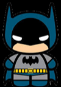

CURRICULUM VITAE DE BRUCE WAYNE
DATOS PERSONALES
-
Nombre completo: Bruce Wayne
-
Fecha de nacimiento: 01/05/1939
-
Lugar de nacimiento: Gotham City
FORMACIÓN ACADÉMICA
-
1956-1961: Universidad del espantapájaros Licenciatura en
aeronaútica
-
1952-1975: Secundario Gotham Bachiller con especialización en
trucos
EXPERIENCIA LABORAL
-
1975-1985: Desocupado Sin trabajo porquer se me rompió el
batimovil
-
1965-1975: Cazavillanos y demás chusma Atrapé a Gatubela a
joker a Victor Fries lo dejé porque se me congeló la capa
-
1962-1965: Aprendiz de superhéroes Hice pasantía con Superman.
Opté por usar mascara porque no pude aprender a peinarme el rulo